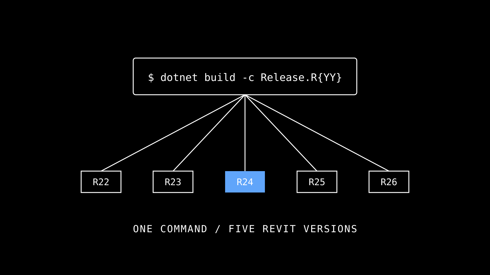
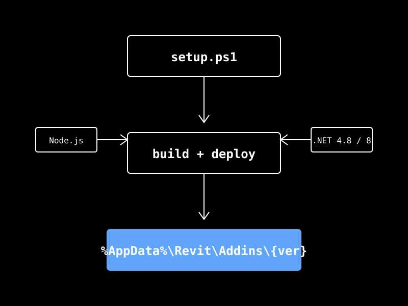

本頁整理 CLAUDE.md 部署規則：保留單一 MCP/RevitMCP.csproj、單一 MCP/RevitMCP.addin，透過 Nice3point SDK 與 Release.R{YY} 組態輸出版本化 DLL。新機器跑 scripts/setup.bat 一條指令搞定。

| 項目 | 需求 | 檢查 |
|---|---|---|
| OS | Windows 10/11（Revit 只支援 Win） | winver |
| .NET | Framework 4.8（R22-R24）+ .NET 8 SDK（R25-R26） | dotnet --list-sdks |
| Node.js | ≥ 18.x（給 MCP-Server 用） | node --version |
| Revit | 2022 / 2023 / 2024 / 2025 / 2026 任一 | 查 %ProgramFiles%\Autodesk\Revit ... |
| git | any recent | git --version |
| port 8964 | 未被佔用 | netstat -ano | findstr 8964 |
建議所有新機器走 setup.bat。它會：(1) 檢查 prerequisites (2) build 所有版本 (3) deploy DLL 到 Revit Add-ins 資料夾 (4) 給 Claude Desktop / Gemini CLI 寫 MCP config (5) 檢查 port 8964。

git clone https://github.com/<your-fork>/REVIT_MCP.git
scripts/setup.bat
會用 powershell -ExecutionPolicy Bypass 啟動 setup.ps1，不必預設 unrestricted policy。
多選——一次裝 2024 + 2025 也行。每版各自輸出 bin/Release.R{YY}/RevitMCP.dll。
Claude Desktop / Gemini CLI / VS Code Copilot / Claude Code 任選。會自動寫對應 config。
Claude Desktop 重啟，Gemini CLI 不必。Revit 開啟即會載入新 dll。
CI / 自動化 build pipeline 想精確控制 → 走手動流程。debugging 想知道哪一步失敗 → 也走手動。
新 DLL 才能取代舊 DLL。沒關閉 → DLL is locked → copy 失敗。tasklist | findstr Revit 確認。
cd MCP
dotnet build -c Release.R24 RevitMCP.csproj把 R24 換成你要的版本（R22/R23/R24/R25/R26）。Output 在 bin/Release.R24/RevitMCP.dll。
Copy-Item "bin/Release.R24/RevitMCP.dll" `
"$env:APPDATA\Autodesk\Revit\Addins\2024\RevitMCP\" -Force注意 .addin 檔由 setup.ps1 或 /deploy-addon skill 一次性建立，後續只更新 .dll 不動 .addin。
啟動 Revit → 看 Add-Ins 面板有 RevitMCP panel → 按 Connect → MCP server 端 log 應看到 WebSocket 連線。
RevitMCP.2024.csproj 或其他版本專用 project.addin 檔.addin 內 hardcode 絕對 DLL 路徑（用 RevitMCP.dll 相對）AddInId（Revit 會把兩個 GUID 視為兩個獨立 plugin 載入兩次）<DeployAddin>true</DeployAddin>（Nice3point SDK 會自動產生 RevitMCP.{version}.addin，與手動 RevitMCP.addin 衝突）| Config | Target | .NET | ElementId | Output |
|---|---|---|---|---|
Release.R22 | Revit 2022 | Framework 4.8 | int | bin\Release.R22\RevitMCP.dll |
Release.R23 | Revit 2023 | Framework 4.8 | int | bin\Release.R23\RevitMCP.dll |
Release.R24 | Revit 2024 | Framework 4.8 | int | bin\Release.R24\RevitMCP.dll |
Release.R25 | Revit 2025 | .NET 8 | long | bin\Release.R25\RevitMCP.dll |
Release.R26 | Revit 2026 | .NET 8 | long | bim\Release.R26\RevitMCP.dll |
Revit 2025+ 的 ElementId 從 int 改為 long。MCP/Core/RevitCompatibility.cs 提供 GetIdValue() 與 ToElementId() 擴充方法跨版本相容。預處理符號 REVIT2025_OR_GREATER 用於條件編譯。
replace {absolute-path} 為你的實際 repo 絕對路徑。第一次使用前必須在 MCP-Server/ 跑 npm run build。
{
"mcpServers": {
"revit-mcp": {
"command": "node",
"args": ["{absolute-path}/MCP-Server/build/index.js"]
}
}
}編輯後重啟 app。Mac 路徑 ~/Library/Application Support/Claude/。
不必重啟，下次 invoke 即生效。
可用 ${workspaceFolder} 代替絕對路徑。專案層配置不跨機器分享自動同步。
專案根目錄。或用 claude mcp add 命令。重啟 session 後生效。
netstat -ano | findstr 8964 只看到自己的 Revit PIDws://localhost:8964：跑 AI client → get_project_infoget_active_view 回傳當前 view 資訊（不是 timeout）